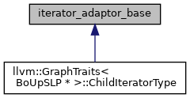

LLVM
9.0.1
iterator_adaptor_base Class Reference
Inheritance diagram for iterator_adaptor_base:

[
legend
]
The documentation for this class was generated from the following file:
include/llvm/IR/
Instructions.h
Generated on Wed Jul 13 2022 12:56:39 for LLVM by
1.9.5